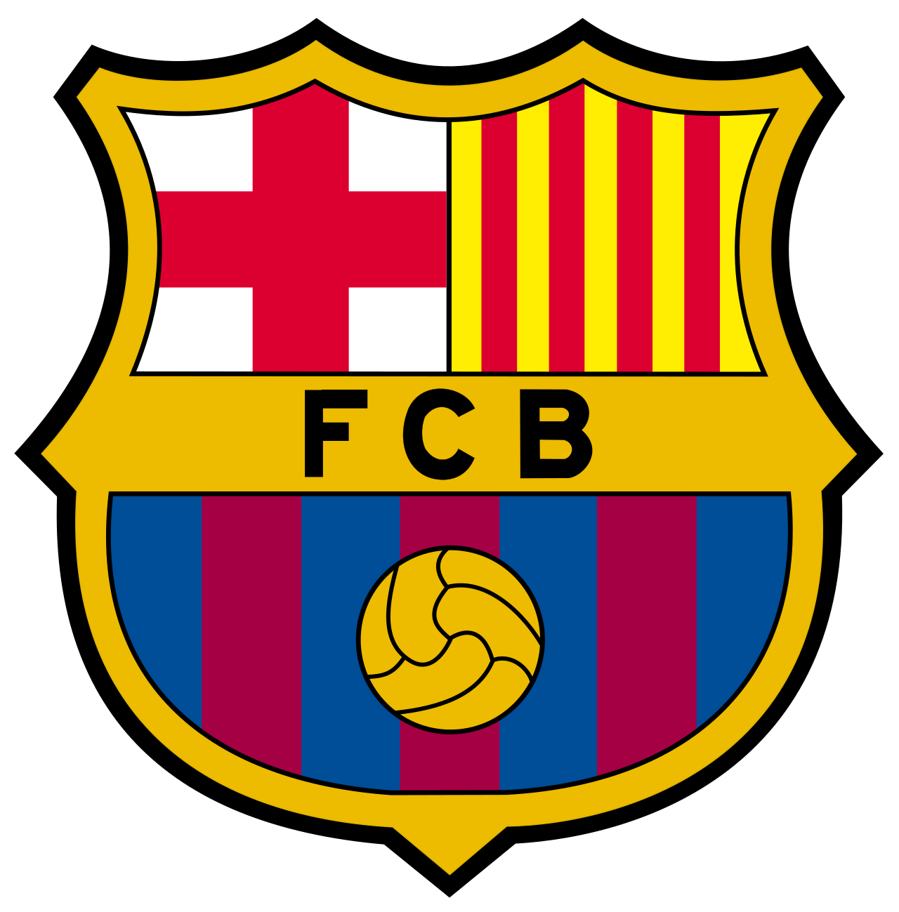
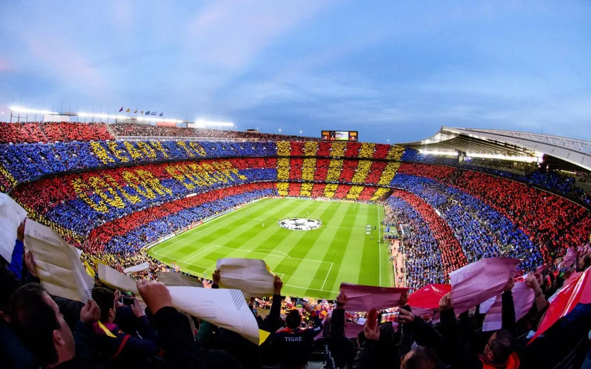

Futbol Club Barcelona
Fondé en 1899, le Barça représente Barcelone et la Catalogne. Le club est surnommé « Blaugrana » en raison de ses couleurs bleu et grenat.

Joueurs légendaires
| Joueur | Nationalité | Période au club | Buts au club |
|---|---|---|---|
| Lionel Messi | Argentine | 2004–2021 | 672 |
| César Rodríguez | Espagnole | 1942–1955 | 232 |
| Luis Suárez | Uruguayenne | 2014–2020 | 198 |
Palmarès
| Compétition | Nombre de titres | Dernier titre |
|---|---|---|
| UEFA Champions League | 5 | 2015 |
| LaLiga | 29 | 2026 |
| Copa del Rey | 32 | 2025 |
Chant du club
El Cant del Barça
Stade Spotify Camp Nou
